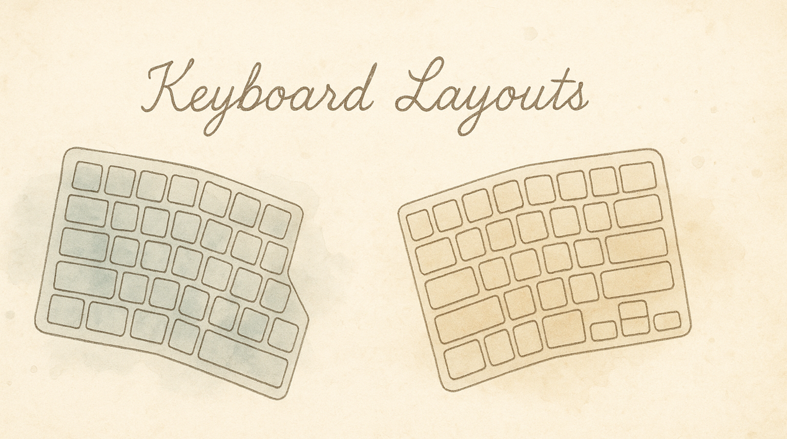
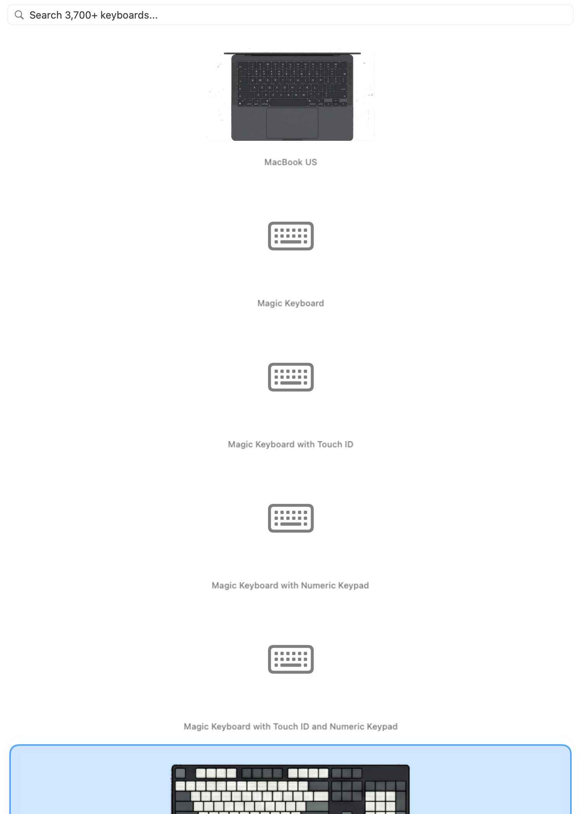

Whether you type on a MacBook, a full-size desktop keyboard, or a 34-key split ergonomic board, KeyPath adapts to match. Select your keyboard and the overlay shows your actual layout — the right keys in the right positions, so your rules and visual feedback always make sense.
Your keyboard's physical layout determines which keys exist, where they are, and how KeyPath's overlay and remapping rules map onto them. A rule configured for a full-size keyboard might reference keys that don't exist on a 40% board. KeyPath handles this by tailoring the overlay and rule display to your selected physical layout.
Full-size (100%):
┌───────────────────────────────────────────────────────────┐
│ Esc F1 F2 F3 F4 F5 F6 F7 F8 F9 F10 F11 F12 │ Ins │
│ │ Del │
│ ` 1 2 3 4 5 6 7 8 9 0 - = Backspace │ │
│ Tab Q W E R T Y U I O P [ ] \ │ │
│ Caps A S D F G H J K L ; ' Enter │ │
│ Shift Z X C V B N M , . / Shift ↑ │ │
│ Ctrl Opt Cmd Space Cmd Opt ← ↓ → │ Num │
└───────────────────────────────────────────────────────────┘
60%: 40%:
┌───────────────────────┐ ┌─────────────────┐
│ ` 1 2 3 4 5 ... │ │ Q W E R T │
│ Tab Q W E R T . │ │ A S D F G │
│ Caps A S D F G . │ │ Z X C V B │
│ Shift Z X C V .. │ └─────────────────┘
│ Ctrl Opt Cmd Space │ No number row,
└───────────────────────┘ no function keys —
No function row, everything through
no arrow cluster layersKeyPath includes layouts for 12 keyboards across three categories:
Traditional staggered-row keyboards in various sizes. These are what most people use.
| Layout | Keys | Description |
|---|---|---|
| ANSI 100% | ~104 | Full-size with number pad, function row, and navigation cluster |
| ANSI 80% (TKL) | ~87 | Tenkeyless — drops the number pad, keeps everything else |
| ANSI 75% | ~84 | Compact with function row and arrow keys, minimal gaps |
| ANSI 65% | ~68 | No function row, keeps arrow keys and a few nav keys |
| ANSI 60% | ~61 | No function row, no arrows — a popular minimalist choice |
| ANSI 40% | ~40 | Letters and modifiers only — everything else on layers |
| HHKB | 60 | Happy Hacking Keyboard — Unix-inspired 60% with Control where Caps Lock is |
Split keyboards place each hand on its own half, allowing a natural shoulder-width typing position. Most use columnar (non-staggered) key columns, which align better with how fingers naturally move.
Traditional staggered: Columnar (split):
┌───┬───┬───┬───┬───┐ ┌───┬───┬───┬───┬───┐
│ Q │ W │ E │ R │ T │ │ Q │ W │ E │ R │ T │
└─┬─┴─┬─┴─┬─┴─┬─┴─┬─┘ ├───┼───┼───┼───┼───┤
│ A │ S │ D │ F │ G │ │ A │ S │ D │ F │ G │
└─┬─┴─┬─┴─┬─┴─┬─┴─┬─┘ ├───┼───┼───┼───┼───┤
│ Z │ X │ C │ V │ B │ │ Z │ X │ C │ V │ B │
└───┴───┴───┴───┴───┘ └───┴───┴───┴───┴───┘
Keys offset diagonally Keys in straight columns
(follows typewriter legacy) (follows finger movement)| Layout | Keys | Description |
|---|---|---|
| Corne | 42 | Popular 3x6 split with 3 thumb keys per side. The go-to starter split keyboard |
| Cornix | 40 | Compact 3x5+3 variant of the Corne with fewer outer columns |
| Ferris Sweep | 34 | Ultra-minimalist 3x5+2 split — only 34 keys total, heavy layer use |
| Sofle | 58 | 4x6 split with encoder knobs and an extra row — more keys for easier transition |
| Kinesis Advantage 360 | 76 | Premium split ergonomic with sculpted keywells that cup your hands |
Kinesis Advantage 360:
┌───┬───┬───┬───┬───┬───┐ ┌───┬───┬───┬───┬───┬───┐
│ = │ 1 │ 2 │ 3 │ 4 │ 5 │ │ 6 │ 7 │ 8 │ 9 │ 0 │ - │
├───┼───┼───┼───┼───┼───┤ ├───┼───┼───┼───┼───┼───┤
│Tab│ Q │ W │ E │ R │ T │ │ Y │ U │ I │ O │ P │ \ │
├───┼───┼───┼───┼───┼───┤ ├───┼───┼───┼───┼───┼───┤
│Cap│ A │ S │ D │ F │ G │ │ H │ J │ K │ L │ ; │ ' │
├───┼───┼───┼───┼───┼───┤ ├───┼───┼───┼───┼───┼───┤
│Sft│ Z │ X │ C │ V │ B │ │ N │ M │ , │ . │ / │Sft│
└───┴───┴───┼───┼───┼───┘ └───┼───┼───┼───┴───┴───┘
│Del│Hom│ │End│Bsp│
┌───┼───┼───┤ ┌────┼───┼───┐
│Bsp│Del│End│ │PgUp│Ent│Spc│
│ │ ├───┤ ├────┤ │ │
│ │ │Hom│ │PgDn│ │ │
└───┴───┴───┘ └────┴───┴───┘
Sculpted keywells — keys are concave to match your fingers' natural arc.
Each hand gets a dedicated thumb cluster.
Screenshot — Physical Layout picker (2-column grid): ┌─────────────────────────────────────────────────────┐
│ Physical Layout │
│ │
│ STANDARD │
│ ┌──────────────┐ ┌──────────────┐ │
│ │ ▣ ANSI 100% │ │ ANSI 80% │ │
│ │ (selected) │ │ (TKL) │ │
│ └──────────────┘ └──────────────┘ │
│ ┌──────────────┐ ┌──────────────┐ │
│ │ ANSI 75% │ │ ANSI 65% │ │
│ └──────────────┘ └──────────────┘ │
│ ┌──────────────┐ ┌──────────────┐ │
│ │ ANSI 60% │ │ ANSI 40% │ │
│ └──────────────┘ └──────────────┘ │
│ ┌──────────────┐ │
│ │ HHKB │ │
│ └──────────────┘ │
│ │
│ SPLIT & ERGONOMIC │
│ ┌──────────────┐ ┌──────────────┐ │
│ │ Corne │ │ Cornix │ │
│ └──────────────┘ └──────────────┘ │
│ ┌──────────────┐ ┌──────────────┐ │
│ │ Ferris Sweep │ │ Sofle │ │
│ └──────────────┘ └──────────────┘ │
│ ┌──────────────┐ │
│ │ Kinesis 360 │ │
│ └──────────────┘ │
└─────────────────────────────────────────────────────┘KeyPath uses your physical layout selection to:
You can combine any physical layout with any logical keymap. For example, select "Corne" as your physical layout and "Colemak-DH" as your keymap to see Colemak-DH labels on a Corne board.
If you're thinking about a new keyboard, here's a rough guide:
If you want a familiar layout but smaller: Start with a 65% or 75%. You keep arrow keys and most shortcuts work unchanged.
If you're curious about ergonomics: The Sofle is a great first split — it has an extra row compared to the Corne, so the transition from a standard board is gentler.
If you want maximum efficiency: The Corne (42 keys) is the community favorite for a balance of minimalism and usability. Pair it with Shortcuts Without Reaching and layers.
If comfort is the priority: The Kinesis Advantage 360 has sculpted keywells that match your fingers' natural arc. It's a significant investment but widely loved for long typing sessions.
If you want the smallest possible: The Ferris Sweep (34 keys) is as minimal as it gets. Everything beyond letters and basic modifiers lives on layers. Not for beginners, but extremely efficient once learned.
Split keyboards benefit especially from KeyPath's features: